Overview
Dress4Now is an integrated online fashion shopping application that optimizes the online clothing shopping experience.
Remember the last time you spent a day in a department store, grabbing clothes and roughly counting the number before an assistant to get into the fitting room? Young female friends around me always complain they didn't have time to go shopping and their wardrobe always lacks a piece of clothing. But the truth that they're easily attracted by an online promotion and open up a fashion app browsing for a whole night.
According to a report by Shopify in 2018, revenue and revenue per user (ARPU) of digital clothing merchants are projected to grow both worldwide and domestically in five years. The U.S. ecommerce fashion industry is expected to grow 8.8 percent while 8.7 percent in Europe and 14.1 percent in China.
The reduced digital barrier provided us with a more cnovenience way to shop. However, as ecommerce reshaped how customers interact with the items in fashion industry and created a totally new experience, problems emerge. The increasing return and exchange rates indicate the space to optimize user experience with online fashion retailers.
Problem Statement and Hypothesis
I targeted the users as young femalel professionals aged 18 to 35 as they make up for the majority of online fashion shopping customers. To address the problem, I randomly chatted with my friends falling into this category and roughly came to the first-stage statement as below.
Problem Statement
Young female professionals need a way to get more details of the clothes online because it will help them get a perfect fit.
Young female professionals need a way to get an organized list of online clothing products and customized recommendations because it will save their time.
Hypothesis:
We believe that by creating a function that allows customers to virtually try clothes on for young female professionals, we will achieve offering the best fit for them.
We will know this to be true when we see higher conversion rates and lower return rates.
User Research
I conducted six interviews in total. Three of them were my friends and three were female consumers I interviewed at department stores.
Key interview questions
Research Findings
I used affinity diagram to analyze all the insights and findings from my user interviews. Overall there are three main painpoints users have with online clothing shopping.
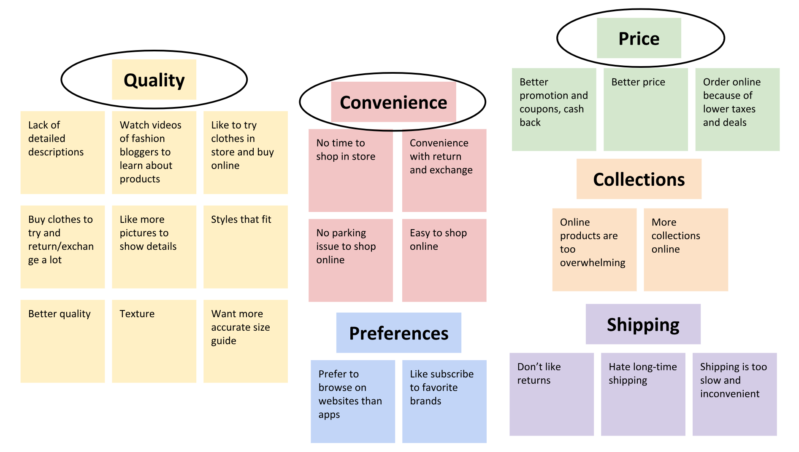Competitive Analysis
With the research findings in mind, I conducted the competitive analysis by listing the featues of competitors. Bascially there are three types of competitors based on my research.
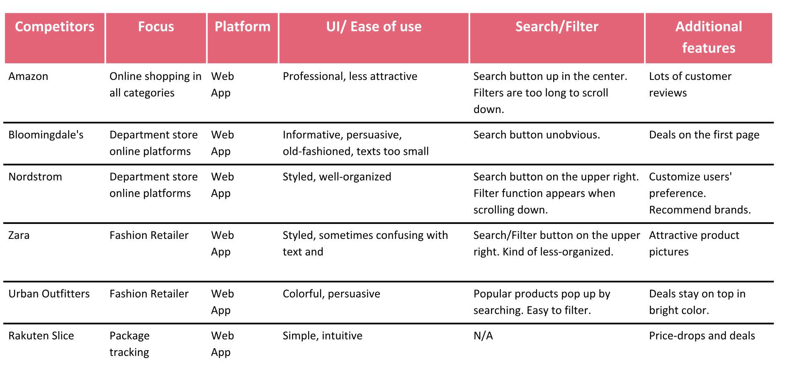Although they do not focus on fashion retail, they almost have everything users in need of and the habit of shopping in other departments sometimes triggered users to search for clothing items. They're professional in creating an easy path for people to shop, but not customized enough for fashion shopping.
They typically extend their offline shopping experience to the online platform. While they're expert for its large collection, their digital platforms actually lack some dedicated efforts with UI/UX designs.
They usually offer a lot of deals and created an online community. They have their own website and mobile platforms that are well-built. But the limitation is that users have to switch if they don't want to shop in a specific brand.
Personas
Based on my research and analysis, I created two personas and revised the problem statement and hypothesis.
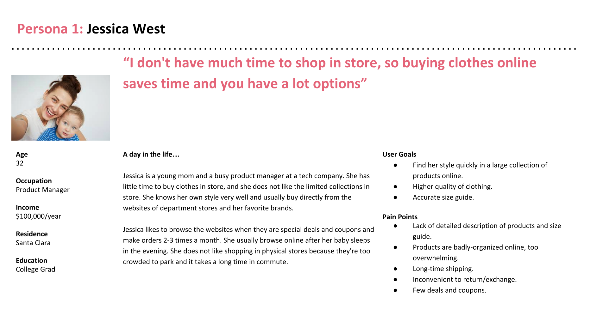 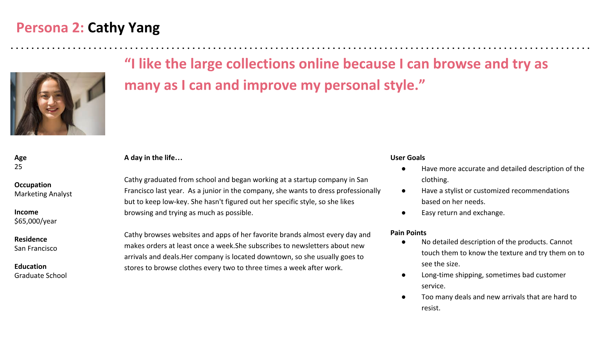Revised Problem Statement
Young female professionals need a way to get more details of the products on online fashion platforms because it will help them have a better knowledge of the quality of products and make reasonable purchase decisions to get perfect fits.
Revised Hypothesis
We believe that by creating a function that allows customers to get access to the details of the clothing products for young female professionals, we will achieve offering the best fit for them.
We will know this to be true when we see higher conversion rates and lower return rates.
Feature Prioritization
I brainstormed many approaches to solve the problem, and prioritized them using the "effort-impact" matrix. Starting from the "low-effort, high-impact" quadrant, I also tried to tackle some of the "high-effort, high-impact" ones.
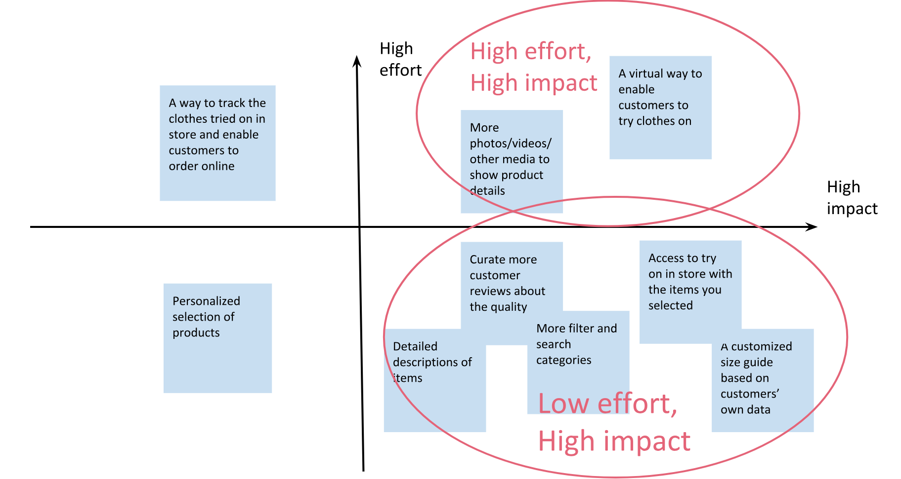User Flow
Creating a user flow enabled me to think logically and integrate all the elements I already had into a happy path. It was much harder than I expected to draft the first flow, partly because of the tedious sign-up steps and the navigation across different brands.
After seleveral times of revision, I finally came to the one below. It's close to a normal online shopping path, but I added three main features innovated to optimize the path.
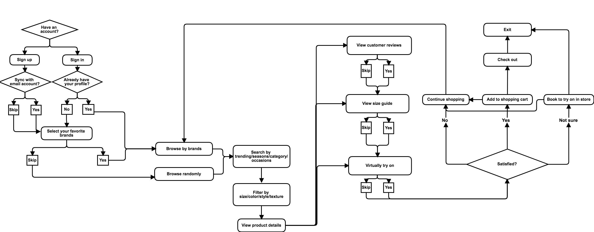Site Map
After some card sorting experiments with potential users, I landed on the site map to lay out the information my product would contain. There was no big surprise from the card sorting results as they all expected in line with a normal fashion retailer platform.
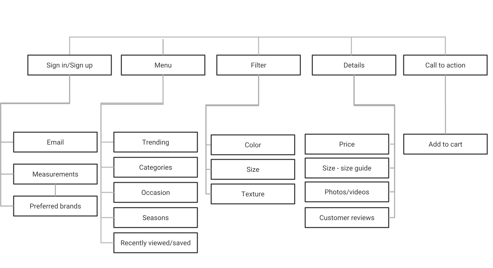User Storyboard
An effective way to progress was to sketch out the scenario of how a potential user would interact with my product and what the main screens would be. (Please excuse my bad drawing!)
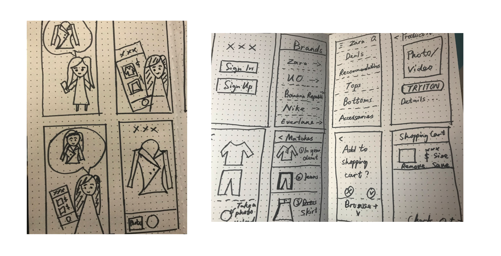First-stage Low-fi Prototype and Usability Testing
I conducted my first round of usability testing with the four main screens at the very first stage.
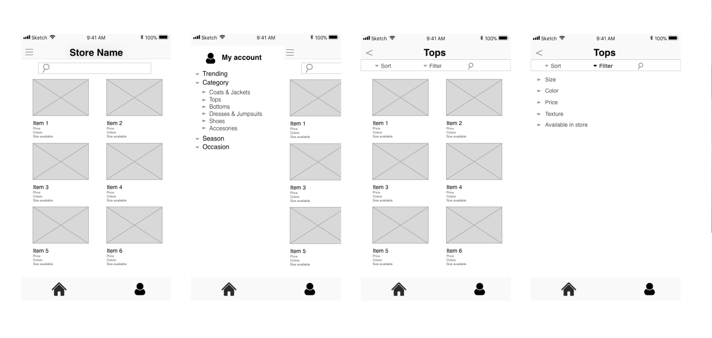I conducted my first round of usability testing with four users and two tasks with the four main screens at the very first-stage.
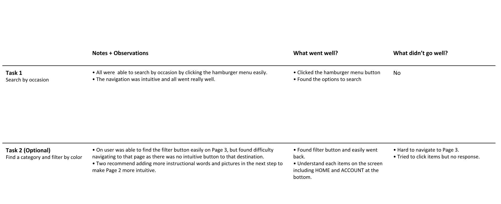Overall the usability testing turned out well, but people expected the UI to be more intuitive and more features added to create an end-to-end path.
Low-fi Prototype
With the insights from first usability testing, I expanded the four main screens to more for a more mature low-fi. I linked screens and buttons to show the interaction.
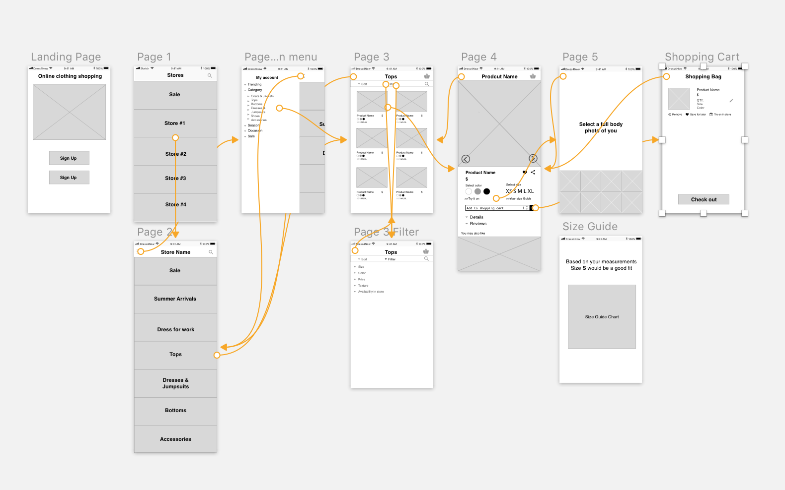MDP Usability Testing
I continued the usability testing all the way along the process from the low-fi to high-fi. Once the main functions were ready, I began to test ignoring the unfinished UI. I found this approach was more effective and flexible than testing after everything is done as it took me less effort to revise.
I've done six usability testings in total, with three tasks . All were offline so that I was able to ask their feedbacks promptly and recorded the whole process.
Thanks to the testings, I realized some barriers that I failed to see as an insider, like the floating home button, the placement of "try on in store" function and some detailed UI elemtns.
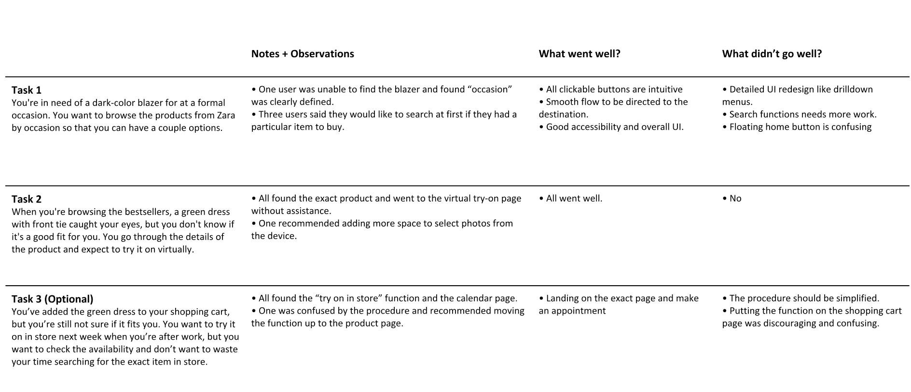Final Prototype
For the final prototype, I've made three main revisions after the usability testings.
The sign up stage was one of the most challenging parts as I tried to get more preferences from users without bothering them. I revised the UI design to make prioritize the hierachy of each page by moving the "back and step" button to the top and making the font weight smaller. To keep users more engaged, I also added pop-up windows in later steps before they check out.
With so many color patterns experimenting with accessibility and branding, I finally decided to keep the main pages black and white as most online fashion retailers. The biggest challenge for this product is that the information of clothing items is too colorful, thus having my own color is easy to make it overwhelming.
Next Steps
Learnings and Challenges
During this project, I've read Don't Make Me Think by Steve Krug and applied some of the methods discussed. It comprehensively talks almost everything in web design in a casual way.